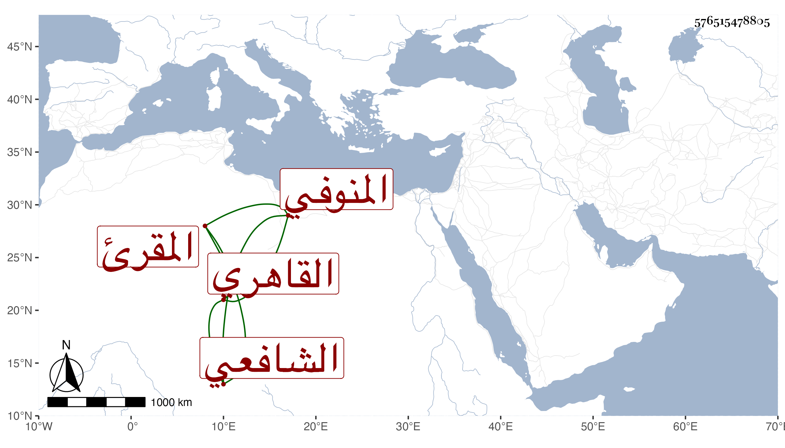

0902Sakhawi.DawLamic.ITO20230111-ara1.EIS1600.576515478805
Biography ID: 576515478805
أحمد بن حسن بن محمد الشهاب المنوفي ثم القاهري الشافعي المقرئ نزيل المنكوتمرية وقريب التقي عبد الغني المنوفي . حفظ القرآن والحاوي وغيرهما واشتغل يسيرا وأخذ القراآت عن الزين جعفر السنهوري بل قرأ اليسير بواسطته على شيخنا وصلى به التراويح وكذا أخذ عن قريبه ابن أبي السعود والبدر حسن الأعرج وتكسب بالشهادة وكان عاقلا فهما كيسا . مات في ليلة الاثنين سادس المحرم سنة إحدى وسبعين بعد توعكه أياما وتأسف عليه غالب معارفه وقد جاز الأربعين عفا الله عنه .
